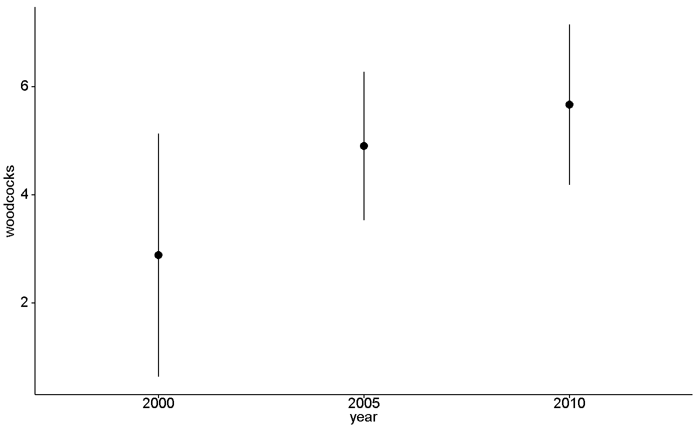
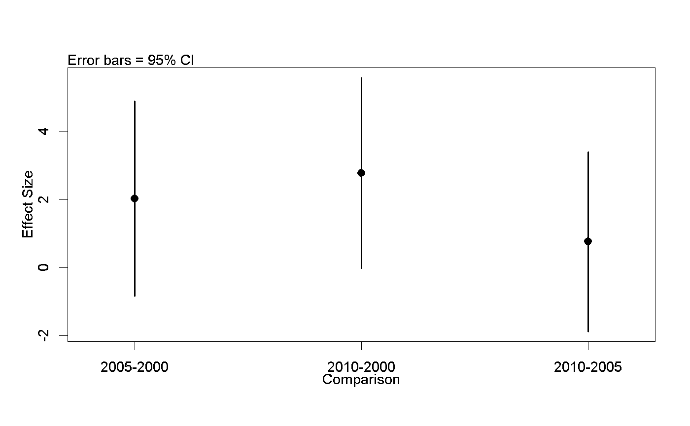

<!-- Generated by pkgdown: do not edit by hand -->
<!DOCTYPE html>
<html>
  <head>
  <meta charset="utf-8">
<meta http-equiv="X-UA-Compatible" content="IE=edge">
<meta name="viewport" content="width=device-width, initial-scale=1.0">

<title>Subset of Woodcock call survey data from Michigan, USA — woodcock_MI_3_years • wildlifeR</title>

<!-- jquery -->
<script src="https://code.jquery.com/jquery-3.1.0.min.js" integrity="sha384-nrOSfDHtoPMzJHjVTdCopGqIqeYETSXhZDFyniQ8ZHcVy08QesyHcnOUpMpqnmWq" crossorigin="anonymous"></script>
<!-- Bootstrap -->

<link href="https://maxcdn.bootstrapcdn.com/bootstrap/3.3.7/css/bootstrap.min.css" rel="stylesheet" integrity="sha384-BVYiiSIFeK1dGmJRAkycuHAHRg32OmUcww7on3RYdg4Va+PmSTsz/K68vbdEjh4u" crossorigin="anonymous">
<script src="https://maxcdn.bootstrapcdn.com/bootstrap/3.3.7/js/bootstrap.min.js" integrity="sha384-Tc5IQib027qvyjSMfHjOMaLkfuWVxZxUPnCJA7l2mCWNIpG9mGCD8wGNIcPD7Txa" crossorigin="anonymous"></script>

<!-- Font Awesome icons -->
<link href="https://maxcdn.bootstrapcdn.com/font-awesome/4.6.3/css/font-awesome.min.css" rel="stylesheet" integrity="sha384-T8Gy5hrqNKT+hzMclPo118YTQO6cYprQmhrYwIiQ/3axmI1hQomh7Ud2hPOy8SP1" crossorigin="anonymous">


<!-- pkgdown -->
<link href="../pkgdown.css" rel="stylesheet">
<script src="../jquery.sticky-kit.min.js"></script>
<script src="../pkgdown.js"></script>
  
  
<!-- mathjax -->
<script src='https://mathjax.rstudio.com/latest/MathJax.js?config=TeX-AMS-MML_HTMLorMML'></script>

<!--[if lt IE 9]>
<script src="https://oss.maxcdn.com/html5shiv/3.7.3/html5shiv.min.js"></script>
<script src="https://oss.maxcdn.com/respond/1.4.2/respond.min.js"></script>
<![endif]-->


  </head>

  <body>
    <div class="container template-reference-topic">
      <header>
      <div class="navbar navbar-default navbar-fixed-top" role="navigation">
  <div class="container">
    <div class="navbar-header">
      <button type="button" class="navbar-toggle collapsed" data-toggle="collapse" data-target="#navbar">
        <span class="icon-bar"></span>
        <span class="icon-bar"></span>
        <span class="icon-bar"></span>
      </button>
      <a class="navbar-brand" href="../index.html">wildlifeR</a>
    </div>
    <div id="navbar" class="navbar-collapse collapse">
      <ul class="nav navbar-nav">
        <li>
  <a href="../index.html">
    <span class="fa fa-home fa-lg"></span>
     
  </a>
</li>
<li>
  <a href="../reference/index.html">Reference</a>
</li>
<li class="dropdown">
  <a href="#" class="dropdown-toggle" data-toggle="dropdown" role="button" aria-expanded="false">
    Articles
     
    <span class="caret"></span>
  </a>
  <ul class="dropdown-menu" role="menu">
    <li>
      <a href="../articles/ANOVA_deer_antlers.html">Intro to 1-way ANOVA: impacts of diet on deer antlers</a>
    </li>
    <li>
      <a href="../articles/data_cleaning_dplyr_filter.html">Data Cleaning: Filtering focal rows with dplyr</a>
    </li>
    <li>
      <a href="../articles/Inference_by_eye.html">Inference-by-eye using RA Fisher's Cat Data</a>
    </li>
    <li>
      <a href="../articles/merge_BBS_with_landcover.html">Data cleaning: Merging 2 large data sets with dplyr</a>
    </li>
    <li>
      <a href="../articles/reporting_paired_t_test_results.html">Running &amp; reporting paired t-tests in R</a>
    </li>
    <li>
      <a href="../articles/reporting_t_test_results.html">Reporting statistical result from a 2-sample t-test</a>
    </li>
    <li>
      <a href="../articles/the_wildlifeR_package.html">Analyzing BBS data from the wildlifeR package</a>
    </li>
  </ul>
</li>
      </ul>
      
      <ul class="nav navbar-nav navbar-right">
        
      </ul>
    </div><!--/.nav-collapse -->
  </div><!--/.container -->
</div><!--/.navbar -->

      
      </header>

      <div class="row">
  <div class="col-md-9 contents">
    <div class="page-header">
    <h1>Subset of Woodcock call survey data from Michigan, USA</h1>
    </div>

    
    <p>There are ~150 routes in Michigan from three years:
2000, 2005 and 2010.  50 were randomly chosen from
2000, a different 50 for 2005, and the remainder for
use for 2010.  Only routes where all 10 stops were acceptable
were used.</p>
    

    <pre class="usage"><span class='no'>woodcock_MI_3_years</span></pre>
        
    <h2 class="hasAnchor" id="format"><a class="anchor" href="#format"></a>Format</h2>

    <p>A data frame with 23 columns, including:</p><dl class='dl-horizontal'>
  <dt>year</dt><dd><p>Year of survey: 2000, 2005 or 2010</p></dd>
  <dt>state</dt><dd><p>State.  Only MI is used.</p></dd>
  <dt>route</dt><dd><p>Route number within Michigan</p></dd>
  <dt>county</dt><dd><p>County within Michigan</p></dd>
  <dt>route.status</dt><dd><p>Status of route as "route run" (RR) or "constant zero" (CZ).  "statuscd" in original USGS data</p></dd>
  <dt>woodcocks</dt><dd><p>Number of woodcocks seen on route; "accpwdck" for "acceptable woodcocks" in original USGS data</p></dd>
  <dt>stops</dt><dd><p>Number of acceptable stops during survey that meet quality control critera. "accpstops" in original USGS data.  Only routes with all stops being acceptable used for this dataset</p></dd>
</dl>
    
    <h2 class="hasAnchor" id="source"><a class="anchor" href="#source"></a>Source</h2>

    <p><a href='https://migbirdapps.fws.gov/mbdc/databases/db_selection.html'>https://migbirdapps.fws.gov/mbdc/databases/db_selection.html</a></p>
    
    <h2 class="hasAnchor" id="details"><a class="anchor" href="#details"></a>Details</h2>

    <p>The official USGS blurb is:
"The American Woodcock (Scolopax minor) Singing-Ground Survey, conducted by the U.S. Fish and Wildlife Service, exploits the conspicuous courtship display of the male woodcock. The survey consists of numerous routes in the eastern half of the U.S. and Canada, which are surveyed in the spring. Counts of singing male woodcock along the routes provide an index to woodcock abundance, and are used to estimate woodcock population trends for states, provinces, management regions, and the continent. The survey is the major source of information considered in the annual setting of woodcock hunting seasons. These data can also be used to examine the effects of weather, landscape change, and other factors on woodcock population abundance."</p>
<p>USGS population reports are available as of fall 2017 at http://www.ruffedgrousesociety.org/Woodcock-Facts#popu</p>
    
    <h2 class="hasAnchor" id="references"><a class="anchor" href="#references"></a>References</h2>

    <p>Sauer, J. R., and J. B. Bortner. 1991. Population trends from the American Woodcock Singing-ground Survey, 1970-88. J. Wildl. Mange. 55:300-312.</p>
    

    <h2 class="hasAnchor" id="examples"><a class="anchor" href="#examples"></a>Examples</h2>
    <pre class="examples"><div class='input'>
<span class='co'>## Make year a factor</span>
<span class='no'>woodcock_MI_3_years</span>$<span class='no'>year</span> <span class='kw'>&lt;-</span> <span class='fu'>factor</span>(<span class='no'>woodcock_MI_3_years</span>$<span class='no'>year</span>)

<span class='co'>## Plot means with 95% confidence intervals</span>

<span class='fu'>library</span>(<span class='no'>ggplot2</span>)
<span class='fu'>library</span>(<span class='no'>ggpubr</span>)

<span class='fu'><a href='http://www.rdocumentation.org/packages/ggpubr/topics/ggerrorplot'>ggerrorplot</a></span>(<span class='no'>woodcock_MI_3_years</span>,
  <span class='kw'>x</span> <span class='kw'>=</span> <span class='st'>"year"</span>,
  <span class='kw'>y</span> <span class='kw'>=</span> <span class='st'>"woodcocks"</span>,
  <span class='kw'>desc_stat</span> <span class='kw'>=</span> <span class='st'>"mean_ci"</span>,
  <span class='kw'>add</span> <span class='kw'>=</span> <span class='st'>"mean"</span>)</div><div class='img'></div><div class='input'>
<span class='co'>## 1-way ANOVA</span>

<span class='co'>## null model</span>
<span class='no'>model.null</span> <span class='kw'>&lt;-</span> <span class='fu'>lm</span>(<span class='no'>woodcocks</span> ~ <span class='fl'>1</span>, <span class='kw'>data</span> <span class='kw'>=</span> <span class='no'>woodcock_MI_3_years</span>)

<span class='co'>## model of interest</span>
<span class='no'>model.alt</span> <span class='kw'>&lt;-</span> <span class='fu'>lm</span>(<span class='no'>woodcocks</span> ~ <span class='no'>year</span>, <span class='kw'>data</span> <span class='kw'>=</span> <span class='no'>woodcock_MI_3_years</span>)

<span class='co'>## compare models</span>
<span class='fu'>anova</span>(<span class='no'>model.null</span>, <span class='no'>model.alt</span>)</div><div class='output co'>#&gt; Analysis of Variance Table
#&gt; 
#&gt; Model 1: woodcocks ~ 1
#&gt; Model 2: woodcocks ~ year
#&gt;   Res.Df    RSS Df Sum of Sq      F  Pr(&gt;F)  
#&gt; 1     93 2019.7                              
#&gt; 2     91 1899.4  2    120.33 2.8825 0.06112 .
#&gt; ---
#&gt; Signif. codes:  0 <U+0091>***<U+0092> 0.001 <U+0091>**<U+0092> 0.01 <U+0091>*<U+0092> 0.05 <U+0091>.<U+0092> 0.1 <U+0091> <U+0092> 1</div><div class='input'>
<span class='co'>## Pairwise comparisons</span>
<span class='co'>### no corrections for multiple comparisons</span>
<span class='fu'>pairwise.t.test</span>(<span class='kw'>x</span> <span class='kw'>=</span> <span class='no'>woodcock_MI_3_years</span>$<span class='no'>woodcocks</span>,
                <span class='kw'>g</span> <span class='kw'>=</span> <span class='no'>woodcock_MI_3_years</span>$<span class='no'>year</span>,
      <span class='kw'>p.adjust.method</span> <span class='kw'>=</span> <span class='st'>"none"</span>)</div><div class='output co'>#&gt; 
#&gt; 	Pairwise comparisons using t tests with pooled SD 
#&gt; 
#&gt; data:  woodcock_MI_3_years$woodcocks and woodcock_MI_3_years$year 
#&gt; 
#&gt;      2000  2005 
#&gt; 2005 0.097 -    
#&gt; 2010 0.020 0.495
#&gt; 
#&gt; P value adjustment method: none </div><div class='input'>
<span class='co'>### Bonferonni correction</span>
<span class='fu'>pairwise.t.test</span>(<span class='kw'>x</span> <span class='kw'>=</span> <span class='no'>woodcock_MI_3_years</span>$<span class='no'>woodcocks</span>,
                <span class='kw'>g</span> <span class='kw'>=</span> <span class='no'>woodcock_MI_3_years</span>$<span class='no'>year</span>,
      <span class='kw'>p.adjust.method</span> <span class='kw'>=</span> <span class='st'>"bonferroni"</span>)</div><div class='output co'>#&gt; 
#&gt; 	Pairwise comparisons using t tests with pooled SD 
#&gt; 
#&gt; data:  woodcock_MI_3_years$woodcocks and woodcock_MI_3_years$year 
#&gt; 
#&gt;      2000 2005
#&gt; 2005 0.29 -   
#&gt; 2010 0.06 1.00
#&gt; 
#&gt; P value adjustment method: bonferroni </div><div class='input'>
<span class='co'>## Tukey test</span>

<span class='co'>### re-fit model with aov()</span>
<span class='no'>model.alt.aov</span> <span class='kw'>&lt;-</span> <span class='fu'>aov</span>(<span class='no'>woodcocks</span> ~ <span class='no'>year</span>, <span class='kw'>data</span> <span class='kw'>=</span> <span class='no'>woodcock_MI_3_years</span>)

<span class='co'>### TukeyHSD() on model from aov()</span>
<span class='fu'>TukeyHSD</span>(<span class='no'>model.alt.aov</span>)</div><div class='output co'>#&gt;   Tukey multiple comparisons of means
#&gt;     95% family-wise confidence level
#&gt; 
#&gt; Fit: aov(formula = woodcocks ~ year, data = woodcock_MI_3_years)
#&gt; 
#&gt; $year
#&gt;                diff         lwr      upr     p adj
#&gt; 2005-2000 2.0216346 -0.85244785 4.895717 0.2199474
#&gt; 2010-2000 2.7820513 -0.01954022 5.583643 0.0520378
#&gt; 2010-2005 0.7604167 -1.88427537 3.405109 0.7727774
#&gt; </div><div class='input'>
<span class='co'>### Plot effect sizes</span>
<span class='fu'><a href='plotTukeysHSD.html'>plotTukeysHSD</a></span>(<span class='fu'>TukeyHSD</span>(<span class='no'>model.alt.aov</span>))</div><div class='img'></div></pre>
  </div>
  <div class="col-md-3 hidden-xs hidden-sm" id="sidebar">
    <h2>Contents</h2>
    <ul class="nav nav-pills nav-stacked">
      
      <li><a href="#format">Format</a></li>

      <li><a href="#source">Source</a></li>

      <li><a href="#details">Details</a></li>

      <li><a href="#references">References</a></li>
      
      <li><a href="#examples">Examples</a></li>
    </ul>

  </div>
</div>

      <footer>
      <div class="copyright">
  <p>Developed by Brouwer Nathan.</p>
</div>

<div class="pkgdown">
  <p>Site built with <a href="http://hadley.github.io/pkgdown/">pkgdown</a>.</p>
</div>

      </footer>
   </div>

  </body>
</html>
